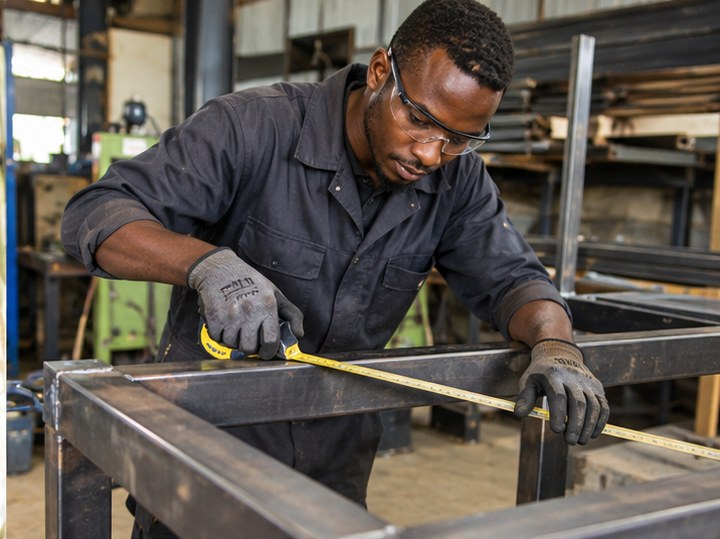
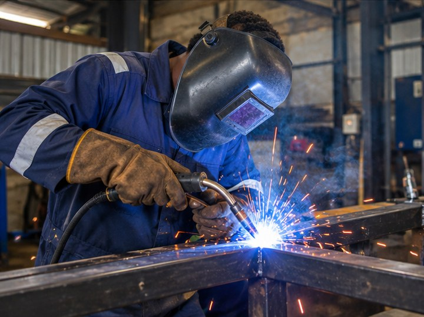

Custom Fabrication
Purpose-built metal products designed around your space and requirements.
CUSTOM METALWORK · WELDING · INSTALLATION
Custom gates, steel doors, railings, grills, carports and made-to-measure metalwork for homes and businesses.
Crafting strong security gates
WHAT WE DO
From security gates and steel doors to railings, frames and bespoke metal projects, we help turn your ideas into durable, carefully finished work.
Discover our services →OUR CAPABILITIES
Purpose-built metal products designed around your space and requirements.
Strong gates, steel doors and security grilles with a clean finish.
Frames, supports, canopies and practical structural steelwork.
Repairs, reinforcement and finishing to extend the life of metalwork.
YOUR PROJECT, YOUR WAY
Share the type of work, measurements, quantity, location and reference photos if you have them. We’ll use the information to understand your project and follow up.
RECENT PROJECTS
Explore a few examples of the gates, railings and steelwork we can help you plan.
Made for your space: security gates
THE JONATOH STANDARD
Our approach to metal fabrication, from the first measurement to the final finish.
These are our service principles and capabilities, not customer testimonials. We publish customer reviews only when they are genuine and approved for sharing.
CUSTOMER EXPERIENCE
A clean finish, clear communication and a result made for the space.
“The gate design gave the front of our home a cleaner look. I liked that the measurements were discussed before the work started.”
“The railing feels solid and the finish looks neat. It made the staircase feel safer without making the space look crowded.”
“We needed a practical steel structure for our space. Planning the size and layout first helped us understand what the job involved.”
“The repair was straightforward and the team focused on getting the metalwork working properly again rather than replacing everything.”
“I wanted something that matched the property. Talking through the design before fabrication made it easier to settle on a practical option.”
“The finished work looks balanced and purposeful. The small details around the joints and edges made a difference to the overall appearance.”
“The gate design gave the front of our home a cleaner look. I liked that the measurements were discussed before the work started.”
“The railing feels solid and the finish looks neat. It made the staircase feel safer without making the space look crowded.”
“We needed a practical steel structure for our space. Planning the size and layout first helped us understand what the job involved.”
“The repair was straightforward and the team focused on getting the metalwork working properly again rather than replacing everything.”
“I wanted something that matched the property. Talking through the design before fabrication made it easier to settle on a practical option.”
“The finished work looks balanced and purposeful. The small details around the joints and edges made a difference to the overall appearance.”
Design preview only: these are illustrative examples, not verified customer reviews. Replace the wording with genuine customer feedback and get permission before publishing.
THE PEOPLE BEHIND THE WORK
Meet the people responsible for planning, fabricating, finishing and installing your metalwork. Replace the sample portraits and role labels with your actual team details.
 WORKSHOP LEADERSHIP
WORKSHOP LEADERSHIPTHE PERSON IN CHARGE
Leads the workshop from the first customer conversation to the final installation. The owner coordinates project planning, material choices, quality checks and finishing so every job has a clear direction.
The owner’s name and personal story can be added here. This featured profile highlights the person accountable for the workshop’s standards and the promise behind “SISI NDO MADAKTARI WA CHUMA”.
Discuss your project ↗
Turns measurements and design ideas into accurate steel components, carefully marking, cutting and assembling each piece before it moves to finishing.
TEAM PROFILE · ADD EMPLOYEE NAME
Joins steel components with attention to strength and alignment, then checks welds and prepares surfaces for a neat, durable finish.
TEAM PROFILE · ADD EMPLOYEE NAME
Fits completed gates, railings and steelwork on site, checking alignment, movement and fixing points so the finished product works as intended.
TEAM PROFILE · ADD EMPLOYEE NAME
Fits completed gates, railings and steelwork on site, checking alignment, movement and fixing points so the finished product works as intended.
TEAM PROFILE · ADD EMPLOYEE NAME
Fits completed gates, railings and steelwork on site, checking alignment, movement and fixing points so the finished product works as intended.
TEAM PROFILE · ADD EMPLOYEE NAME
Fits completed gates, railings and steelwork on site, checking alignment, movement and fixing points so the finished product works as intended.
TEAM PROFILE · ADD EMPLOYEE NAME
Fits completed gates, railings and steelwork on site, checking alignment, movement and fixing points so the finished product works as intended.
TEAM PROFILE · ADD EMPLOYEE NAME
Fits completed gates, railings and steelwork on site, checking alignment, movement and fixing points so the finished product works as intended.
TEAM PROFILE · ADD EMPLOYEE NAME
Fits completed gates, railings and steelwork on site, checking alignment, movement and fixing points so the finished product works as intended.
TEAM PROFILE · ADD EMPLOYEE NAME
Fits completed gates, railings and steelwork on site, checking alignment, movement and fixing points so the finished product works as intended.
TEAM PROFILE · ADD EMPLOYEE NAME
Fits completed gates, railings and steelwork on site, checking alignment, movement and fixing points so the finished product works as intended.
TEAM PROFILE · ADD EMPLOYEE NAMETeam portraits are locally stored illustrative images, not photographs of confirmed employees. Replace them with your actual team photos and update each person’s name and role before publishing.
READY TO GET STARTED?